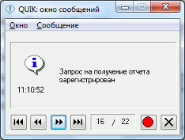
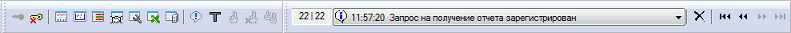

Окно сообщений
Окно служит для отображения сообщений о работе системы QUIK, об ошибках, а также уведомлений торговой системы и администратора.

В окне сообщений отображаются только сообщения, полученные в ходе текущего сеанса связи.
Окно появляется автоматически при получении нового сообщения. Открыть окно вручную можно с помощью кнопки или иконки (окна сообщений) на панели инструментов, либо двойным нажатием левой кнопки мыши на строке в таблице сообщений.
Функции для копирования выделенного текста сообщения доступны в контекстном меню нажатием правой кнопки мыши на сообщении:
- «Копировать» или «Ctrl» + «C» – копирование текста сообщения в буфер обмена. Функция доступна только для выделенного текста.
- «Выделить все» или «Ctrl» + «A» – выделение текста сообщения для копирования.
Ссылки в тексте сообщения открываются в интернет-браузере, установленном по умолчанию. Для перехода по ссылке щелкните левой кнопкой мыши по тексту ссылки.
Перемещение по списку сообщений
Окно сообщений может содержать больше одного сообщения, при этом показывается только одно сообщение, по умолчанию – последнее из полученных. Под текстом сообщения расположен индикатор количества сообщений вида NN/MM, где NN – номер показываемого сообщения, MM – число полученных сообщений.
- Для просмотра остальных сообщений используйте кнопки:
 - перейти к первому сообщению;
- перейти к первому сообщению;
 - перейти к предыдущему сообщению;
- перейти к предыдущему сообщению;
 - перейти к следующему сообщению;
- перейти к следующему сообщению;
 - перейти к последнему сообщению.
- перейти к последнему сообщению.
- Для очистки списка сообщений нажмите кнопку .
- При чистке списка сообщений хранилище сообщений и все открытые таблицы сообщений очищаются.
- Окно сообщений закрывается нажатием кнопки или клавиши «Esc».
Настройка окна сообщений
Для настройки окна воспользуйтесь пунктом меню Система/Настройки/Основные настройки…, раздел «Сообщения»:
- «При получении показывать в окне сообщения»:
- «Отмеченные как важные» – окно сообщений появляется на экране при поступлении важного сообщения (отмеченного значком в поле «Важность»).
- «Ошибки транзакций» – окно сообщений появляется на экране при поступлении ответа на транзакцию с ошибкой.
- «Обычные» – окно сообщений появляется на экране при поступлении любого сообщения, за исключением важных и ошибок транзакций.
Чтобы получать сообщения всех типов, включите все флажки.
- «Расширять Окно сообщений для длинных сообщений» – при получении нового сообщения изменять размер окна таким образом, чтобы в нем был виден весь текст сообщения.
- «Очищать сообщения при запуске программы» – при запуске программы список сообщений очищается.
- «Сохранять за последние … дней» – позволяет сохранять список сообщений за указанное количество дней.
Расположение окна на панели инструментов
Окно сообщений может быть помещено на панели инструментов в компактном виде.

Нажатием левой кнопки мыши на окне сообщений открывается список предыдущих сообщений текущего сеанса связи.
Настройки
- Откройте пункт меню Система/Настройки/Основные настройки..., раздел «Программа» / «Панели инструментов».
- Поставьте флажок «Окно сообщений».
- Нажмите кнопку «OK». Окно сообщений появится на панели инструментов. Разместите его на экране так, чтобы было видно сообщение целиком.
- Появление окна на экране при получении новых сообщений можно отключить (о настройке см. п. Настройка окна сообщений).
См. также Таблица сообщений.